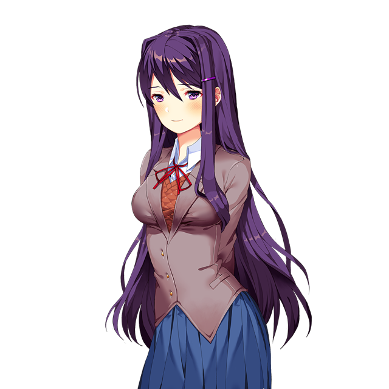
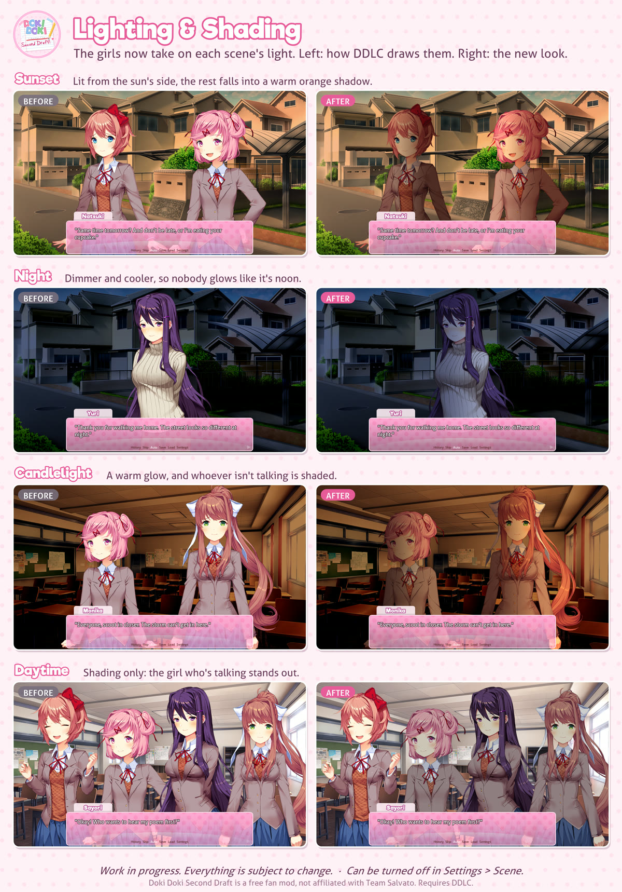

Sayori
your neighbour since you were six
Sets four alarms. Only the duck one works. She's been brave by accident her whole life, and this year she's trying to be brave on purpose.
same club. kinder story.
A fan mod for Doki Doki Literature Club! where nothing goes wrong. You join the club, and then you just get to stay: a whole school year of poems, cupcakes, rainy afternoons and one very big festival. It's free.
first time? here's how to install it (there's an Android guide too)
Welcome back to the Literature Club! I know last time was... a lot. So we're doing it again, properly this time. A second draft!
There's a whole year ahead of us. Monika has plans for the festival, Natsuki has been practising cupcakes, and Yuri found a book she wants to lend you. Everybody's here, and everybody's staying.
Come sit by the window. Maybe write something for me?
love, Sayori ♥
your neighbour since you were six
Sets four alarms. Only the duck one works. She's been brave by accident her whole life, and this year she's trying to be brave on purpose.
baker, manga expert, not cute
Runs a kitchen like a very small, very loud army. Will tell you your piped whale looks sad, and then save you the lighthouse cupcake anyway.

horror novels, tea, eleven candles
Texts like she's writing letters ("Warm regards, Yuri"). Quiet, until she starts talking about a book, and then you never want her to stop.
club president, laminates everything
Great at speeches, debates and paperwork. Hopeless at claw machines. She's been writing a song since April and can't find the ending.
28 October 2026
You can now play all of Act 5 and Act 6, right up to the fireworks. On Windows there's an installer that keeps the game up to date, and on Android the app updates itself.
Also new: you're finally in the club photo (pick your look at the start), Monika has her own piano piece, and there's a big pile of fixes from everyone who playtested. Thank you!
25 October 2026
The girls now take on the light of each scene: lit from the sun's side at sunset, darker and bluer at night, warm by candlelight. Whoever's talking steps forward a little.

22 October 2026
Acts 1 to 4: joining the club, the first poem day, Golden Week, and a rainy June that ends in a storm nobody can walk home through.
Every download is on GitHub Releases.
You'll need the original Doki Doki Literature Club! too. It's free at ddlc.moe. Please finish it first!
Devlogs, sneak peeks you won't see anywhere else, bug reports, poems, and far too many duck emoji.
Join the clubhi, I'm Aoi! I made this because DDLC's first act is one of my favourite things ever, and I wanted to see what happens if the club just... keeps going.
it's free and it always will be. if you play it, come tell me what you think!
Aoi ♥